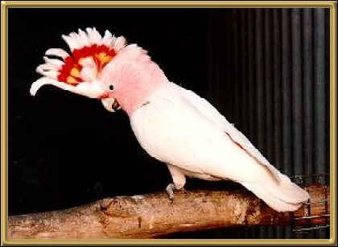

Or more commonly known as the "Major Mitchell Cockatoo", this bird is found throughout most of the arid central parts of Australia, this bird tends not to congregate in huge flocks, which is somewhat unusual for this type of bird. The soft pink and white colouring looks like a sunrise when they fly. 32-36cm (12.5-14 inches).
Photographer: AD & MC Trounson